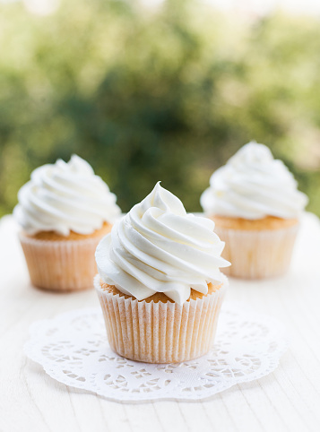

Cupcakes

Description
Here is a recipe on how to make vanilla cupcakes (along with instructions on how to make cupcake frosting).
Ingredients
Cupcakes
- 2 cups all-purpose flour
- 2 cups granulated sugar
- 1/4 teaspoon salt
- 1 cup unsalted butter
- 1 cup water
- 1/2 cup buttermilk
- 1 teaspoon baking soda
- 1 teaspoon vanilla
- 2 eggs (beaten)
Icing/Frosting
- 1/2 cup unsalted butter
- 6 tablespoons milk
- 2 1/2 cups powdered sugar
- 1 teaspoon vanilla
Equipment
- large bowl
- regular-size muffin pan(12 count)
- paper baking cups
- one-quart sauce pan
Steps
To make cupcakes
- preheat the oven to 325°F
- place paper baking cups into muffin pan
- get a large bowl and mix flour, granulated sugar and salt using a whisk
- Set that asid and get a saucepan (one-quart sized)
- Heat one cup of butter and water to boiling
- Remove the saucepan from the heat and pour it into the flour mixture before mixing them altogether
- Add buttermilk, baking soda, vanilla, and eggs before mixing well
- Then divide the batter evenly among the muffin cups (fill them two-thirds full)
- Put them in the oven and bake for 20 to 25 minutes
To make frosting:
- get a saucepan (one-quart sized) and heat butter and milk to simmering
- remove the saucepan from the heat and add in powdered sugar before beating
- Spoon the warm icing over the cupcakes (after finished baking and cooling down)